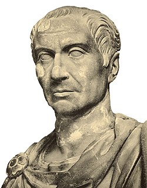

Het oude Rome heeft vele keizers gekend. Ik ga het hier hebben over de bekendste en belangrijkste keizers:
Augustus
Augustus was de eerste keizer van Rome. Hij zorgde na een periode vool onrust voor orde in het rijk. Hij stopte het politieke geweld en liet tempels, een amfitheater en aquaducten bouwen.
Nero
Nero liet het regeren vooral aan anderen over. Hij was vooral bezig met muziek een een jongen genaamd Sporus. Net als keizer Galigula liet hij veel mensen vermoorden zoals zijn moeder. Na een grote brand in 64 n.C. werd hij als de persoon die de brand had aangestoken aangewezen. Hij zoe dat hebben gedaan om ruimte te maken voor zijn paleis. Nadat er tegenstanders begonnen te roeren in Gallië en Spanje pleegde Nero zelfmoord in 68 n.C. Met zijn dood kwam er een einde aan de Julius-Claudische dynastie.
Hadrianus
Hardianus reisde veel en was erg geïnteresseerd in de Griekse cultuur. Door deze reizen was overtuigd van de consolidatiepolitiek: stoppen met het uitbreiden van het rijk en de grenzen versterken, daarom bouwde hij in Brittannië de Muur van Hadrianus. Hij hervormde de bestuurlijke opbouw van het rijk. Het kwam er op neer dat de senaat-families macht verloren en hoge officieren en anderen uit de ridderstand meer macht konden krijgen. Na de adoptief keizers zou de macht van het rijk langzaam afnemen.
Caesar
Julius Caesar is misschien welde bekendste keizer uit het ude Rome. Door zijn heerschappij werd de Romeinse Republiek omgevormd tot het Romeinse keizerrijk. Hij is vooral bekend omdat hij meerdere oorlogen tegen Pompeius had gewonnen en omdat hij een dictator was. Caesar was door een waarzegger verteld dat in het midden van maart gevaar zou brengen. Caesar geloofde daar niet veel van. Caesars vrouw, Calpurnia, vertelde hem over dromen waarin zij werd gewaarschuwd voor dit gevaar. Ook dit geloofde Caesar niet. Maar op 15 maart, in het midden van de maand, werd hij gedood door de senatoren die samen hadden gewerkt om Caesar te doden. Hij liep drieëntwintig dolksteken op.